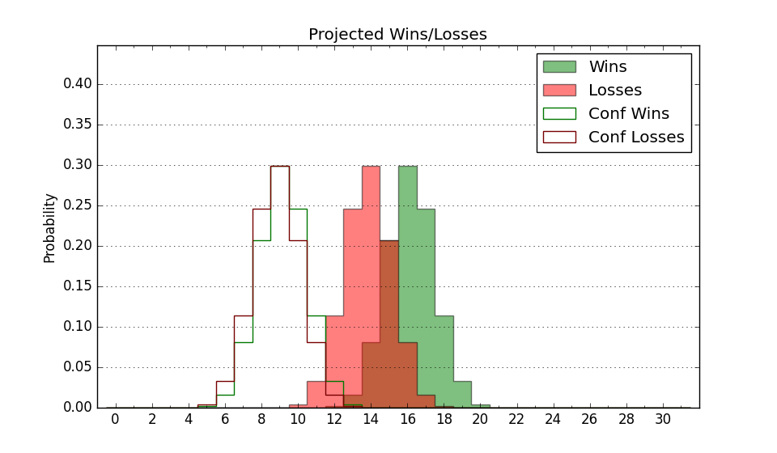

| Home | Game Probabilities | Conferences | Preseason Predictions | Odds Charts | NCAA Tournament |
| City: | Riverside, California | |
| Conference: | Western (8th)
| |
| Record: | 8-12 (Conf) 13-16 (Overall) | |
| Ratings: | Comp.: -2.9 (192nd) Net: -2.9 (192nd) Off: 102.4 (231st) Def: 105.2 (167th) SoR: 0.0 (132nd) |
| Remaining | ||||||
|---|---|---|---|---|---|---|
| Date | Opponent | Win Prob | Pred. | |||
| Previous | Game Score | |||||
| Date | Opponent | Win Prob | Result | Off | Def | Net |
| 11/10 | Jackson St. (300) | 82.5% | W 80-66 | 5.8 | -6.3 | -0.5 |
| 11/17 | Portland St. (259) | 74.7% | L 63-66 | -11.8 | -4.7 | -16.6 |
| 11/18 | St. Thomas MN (145) | 52.6% | W 66-62 | 6.0 | 6.3 | 12.2 |
| 11/19 | Cal Poly (339) | 90.3% | W 67-58 | -7.1 | -4.1 | -11.1 |
| 11/29 | @Southern Utah (257) | 46.1% | W 91-66 | 17.5 | 12.1 | 29.5 |
| 12/6 | Dixie St. (278) | 78.7% | L 69-72 | -10.0 | -3.9 | -13.9 |
| 12/12 | @Oregon (68) | 10.2% | L 55-76 | -10.1 | 0.5 | -9.5 |
| 12/16 | @UC Riverside (234) | 41.8% | W 70-69 | 15.2 | -7.8 | 7.3 |
| 12/19 | Western Kentucky (154) | 55.4% | L 70-73 | -15.0 | 3.8 | -11.1 |
| 12/27 | Chicago St. (301) | 82.6% | W 74-62 | 19.6 | -9.6 | 10.0 |
| 12/30 | @New Mexico St. (295) | 56.9% | L 61-66 | -14.5 | 11.7 | -2.8 |
| 1/4 | @Utah Valley (157) | 27.2% | L 58-65 | -2.7 | -2.7 | -5.3 |
| 1/6 | @Seattle (126) | 20.6% | L 46-48 | -21.7 | 29.5 | 7.7 |
| 1/11 | Tarleton St. (141) | 51.7% | W 77-63 | 17.9 | 7.7 | 25.6 |
| 1/13 | Abilene Christian (230) | 70.6% | W 68-53 | -4.5 | 16.7 | 12.1 |
| 1/20 | Southern Utah (257) | 74.4% | W 83-76 | 9.9 | -7.7 | 2.1 |
| 1/25 | @UT Rio Grande Valley (323) | 66.8% | W 63-54 | -0.5 | 11.2 | 10.7 |
| 1/27 | @Stephen F. Austin (166) | 29.0% | W 81-79 | 16.4 | -9.5 | 6.9 |
| 2/3 | Seattle (126) | 47.0% | L 60-61 | 0.4 | -5.4 | -5.0 |
| 2/8 | UT Arlington (140) | 51.7% | W 64-63 | -6.0 | 10.4 | 4.4 |
| 2/10 | @Dixie St. (278) | 52.0% | L 78-85 | 12.6 | -26.0 | -13.4 |
| 2/15 | Utah Valley (157) | 56.0% | L 46-69 | -26.8 | -11.5 | -38.3 |
| 2/17 | @Grand Canyon (57) | 8.6% | L 76-79 | 21.7 | -5.6 | 16.1 |
| 2/22 | @Abilene Christian (230) | 41.4% | L 65-71 | 0.2 | -5.7 | -5.6 |
| 2/24 | @Tarleton St. (141) | 23.9% | L 65-82 | 3.5 | -19.0 | -15.5 |
| 2/29 | Stephen F. Austin (166) | 58.1% | L 60-62 | -8.7 | 3.6 | -5.1 |
| 3/2 | UT Rio Grande Valley (323) | 87.2% | W 88-52 | 28.6 | 8.0 | 36.6 |
| 3/7 | @UT Arlington (140) | 23.9% | L 57-71 | -14.8 | 7.6 | -7.2 |
| 3/9 | Grand Canyon (57) | 24.2% | L 47-68 | -18.0 | -1.8 | -19.8 |
| Stats & Trends | |||||
|---|---|---|---|---|---|
| Current | Day | Week | Month | Season | |
| Composite | -2.9 | -0.0 | -0.9 | -2.9 | +1.3 |
| Comp Rank | 192 | -- | -10 | -28 | +14 |
| Net Efficiency | -2.9 | -0.0 | -0.9 | -3.1 | -- |
| Net Rank | 192 | -- | -8 | -30 | -- |
| Off Efficiency | 102.4 | +0.0 | -1.1 | -0.5 | -- |
| Off Rank | 231 | -- | -24 | -18 | -- |
| Def Efficiency | 105.2 | -0.0 | +0.3 | -2.6 | -- |
| Def Rank | 167 | -3 | +5 | -32 | -- |
| SoS Rank | 233 | +1 | +42 | +80 | -- |
| Exp. Wins | 13.0 | -- | -0.5 | -3.4 | -1.4 |
| Exp. Conf Wins | 8.0 | -- | -0.5 | -3.4 | -1.6 |
| Conf Champ Prob | 0.0 | -- | -- | -0.1 | -6.0 |

| Advanced Stats | ||
|---|---|---|
| Stat | Value | Rank |
| Off Eff FG % | 0.463 | 308 |
| Off Ast Ratio | 0.122 | 306 |
| Off ORB% | 0.316 | 74 |
| Off TO Rate | 0.137 | 110 |
| Off FT Ratio | 0.345 | 138 |
| Def Eff FG % | 0.509 | 184 |
| Def Ast Ratio | 0.137 | 130 |
| Def ORB% | 0.233 | 26 |
| Def TO Rate | 0.130 | 305 |
| Def FT Ratio | 0.292 | 95 |